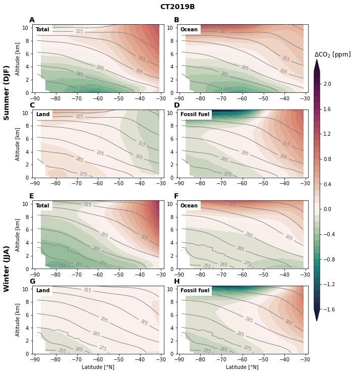
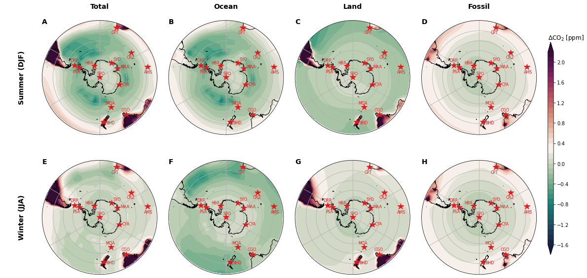

Simulated CO2 distributions¶
%load_ext autoreload
%autoreload 2
from itertools import product
import numpy as np
import matplotlib.pyplot as plt
import matplotlib.gridspec as gridspec
import cartopy.crs as ccrs
import figure_panels
import models
import obs_surface
import util
Load data from CarbonTracker (CT2019B)¶
Use the models interface to compute zonal-means and surface molefractions.
model_list = ['CT2019B',]
model_obj = {model: models.Model(model) for model in model_list}
model_obj
{'CT2019B': <models.core.Model at 0x2b20e6857d10>}
%%time
dset_srf = {
model: model_obj[model].open_derived_dataset('molefractions_surface_daily')
for model in model_list
}
ds_spo = {
model: model_obj[model].open_derived_dataset('spo_ts_daily')
for model in model_list
}
for model in model_list:
for v in ['CO2', 'CO2_OCN', 'CO2_LND', 'CO2_FFF']:
dset_srf[model][v] = dset_srf[model][v] - ds_spo[model][v]
dset_srf[model] = dset_srf[model].groupby('time.season').mean('time').compute()
dset_srf[model_list[0]].CO2.sel(season='DJF').plot(vmin=-2, vmax=2)
dset_srf
assuming cache is correct
reading cached file: /glade/work/mclong/so-co2-airborne-obs/cache-model-calcs/CT2019B/molefractions_surface_daily.zarr
assuming cache is correct
reading cached file: /glade/u/home/mclong/codes/so-co2-airborne-obs/so-co2-airborne-obs/models/data-cache/CT2019B/spo_ts_daily.nc
CPU times: user 2.49 s, sys: 275 ms, total: 2.76 s
Wall time: 21.8 s
{'CT2019B': <xarray.Dataset>
Dimensions: (season: 4, lat: 30, lon: 120)
Coordinates:
* lat (lat) float64 -89.0 -87.0 -85.0 -83.0 ... -37.0 -35.0 -33.0 -31.0
* lon (lon) float64 -178.5 -175.5 -172.5 -169.5 ... 172.5 175.5 178.5
* season (season) object 'DJF' 'JJA' 'MAM' 'SON'
Data variables:
CO2 (season, lat, lon) float32 -0.00335 -0.003348 ... 0.006025
CO2_FFF (season, lat, lon) float32 -0.0009013 -0.0009003 ... 0.2733 0.2737
CO2_LND (season, lat, lon) float32 0.0009545 0.0009534 ... -0.1693 -0.1649
CO2_OCN (season, lat, lon) float32 -0.003329 -0.003328 ... -0.1071 -0.1047
PS (season, lat, lon) float32 6.643e+04 6.649e+04 ... 1.014e+05
T (season, lat, lon) float32 244.1 244.2 244.2 ... 290.1 290.2 290.2
area (season, lat, lon) float64 5.179e+09 5.179e+09 ... 2.544e+11
theta (season, lat, lon) float32 274.4 274.4 274.4 ... 288.9 289.0 289.0}
dsets_theta_bins = {}
for model in model_list:
ds = model_obj[model].open_derived_dataset(
'molefractions_theta_bins',
kwargs_name='SO-10K-bins-300K_275K',
lat_bounds=(-80., -45.),
theta_bins=[(295., 305.), (270., 280.),],
)
dsets_theta_bins[model] = ds.sel(time=slice('2009', '2020')).compute()
dsets_theta_bins
assuming cache is correct
reading cached file: /glade/u/home/mclong/codes/so-co2-airborne-obs/so-co2-airborne-obs/models/data-cache/CT2019B/molefractions_theta_bins.SO-10K-bins-300K_275K.nc
{'CT2019B': <xarray.Dataset>
Dimensions: (time: 3652, theta_bins: 2, d2: 2)
Coordinates:
* time (time) datetime64[ns] 2009-01-01T12:00:00 ... 2018-12-...
* theta_bins (theta_bins) float64 300.0 275.0
theta_bins_bounds (theta_bins, d2) float64 295.0 305.0 270.0 280.0
Dimensions without coordinates: d2
Data variables:
CO2 (time, theta_bins) float32 383.7 383.5 ... 406.2 405.9
Z3 (time, theta_bins) float32 4.937e+03 669.0 ... 807.7
P (time, theta_bins) float32 5.344e+04 ... 8.992e+04
T (time, theta_bins) float32 249.3 268.7 ... 245.7 267.5
theta (time, theta_bins) float32 299.8 275.8 ... 299.8 276.2
CO2_OCN (time, theta_bins) float32 -10.24 -10.45 ... -26.17
CO2_LND (time, theta_bins) float32 -5.733 -5.565 ... -12.81
CO2_FFF (time, theta_bins) float32 31.47 31.31 ... 76.79 76.64
area (time, theta_bins) float64 1.375e+11 ... 1.264e+11}
%%time
dset_za = {
model: model_obj[model].open_derived_dataset('molefractions_z_za')
for model in model_list
}
for model in model_list:
for v in ['CO2', 'CO2_OCN', 'CO2_LND', 'CO2_FFF']:
dset_za[model][v] = dset_za[model][v] - dsets_theta_bins[model][v].sel(theta_bins=300.) #ds_spo[model][v]
dset_za[model] = dset_za[model].groupby('time.season').mean('time').compute()
dset_za[model_list[0]].CO2.sel(season='DJF').plot(vmin=-2, vmax=2)
dset_za
assuming cache is correct
reading cached file: /glade/work/mclong/so-co2-airborne-obs/cache-model-calcs/CT2019B/molefractions_z_za.zarr
/glade/work/mclong/miniconda3/envs/so-co2/lib/python3.7/site-packages/dask/array/numpy_compat.py:39: RuntimeWarning: invalid value encountered in true_divide
x = np.divide(x1, x2, out)
CPU times: user 1.37 s, sys: 133 ms, total: 1.5 s
Wall time: 10.9 s
{'CT2019B': <xarray.Dataset>
Dimensions: (season: 4, zlev: 25, lat: 30)
Coordinates:
* lat (lat) float64 -89.0 -87.0 -85.0 -83.0 ... -35.0 -33.0 -31.0
* zlev (zlev) float64 1.12e+04 1.04e+04 9.6e+03 ... 200.0 150.0 100.0
theta_bins float64 300.0
* season (season) object 'DJF' 'JJA' 'MAM' 'SON'
Data variables:
CO2 (season, zlev, lat) float64 -0.6654 -0.6578 ... -0.005663
CO2_FFF (season, zlev, lat) float64 -3.022 -3.003 ... 0.06542 0.09073
CO2_LND (season, zlev, lat) float64 0.6113 0.6067 ... 0.0737 0.119
CO2_OCN (season, zlev, lat) float64 1.762 1.755 ... -0.2422 -0.2157
P (season, zlev, lat) float64 1.991e+04 1.992e+04 ... 1.008e+05
T (season, zlev, lat) float64 224.3 224.3 224.3 ... 288.1 289.2
Z3 (season, zlev, lat) float64 1.122e+04 1.122e+04 ... 101.8 101.9
area (season, lat) float64 5.179e+09 1.553e+10 ... 2.544e+11
theta (season, zlev, lat) float64 356.6 356.6 356.3 ... 287.5 288.6}
Zonal mean CO2 distributions¶
tracer_name = dict(
CO2='Total',
CO2_OCN='Ocean',
CO2_LND='Land',
CO2_FFF='Fossil fuel',
)
def section_panel(model_list):
fig = plt.figure(figsize=(8, 12)) #dpi=300)
gs_outer = gridspec.GridSpec(
nrows=2, ncols=1,
left=0, right=0.95,
wspace=0.075, hspace=0.15,
)
ax_row = []
ax_col = []
ax_list = []
for j, model in enumerate(model_list):
for i, season in enumerate(['DJF', 'JJA']):
gs_inner = gs_outer[i, j].subgridspec(
nrows=2, ncols=2,
hspace=0.25, wspace=0.1
)
axs = np.array([
plt.subplot(gs_inner[0, 0]), plt.subplot(gs_inner[0, 1]),
plt.subplot(gs_inner[1, 0]), plt.subplot(gs_inner[1, 1]),
])
ds_xs = dset_za[model].sel(season=season)
lat = ds_xs.lat
zlev = ds_xs.zlev * 1e-3
theta = ds_xs.theta
for n, v in enumerate(['CO2', 'CO2_OCN', 'CO2_LND', 'CO2_FFF']):
title = f'{model} {season} {v}'
cf = figure_panels.model_CO2_xsection(lat, zlev, ds_xs[v].values, theta.values, axs[n])
axs[n].text(-89.5, 9.5, tracer_name[v], fontweight='bold', backgroundcolor='w', zorder=100)
if not (i == 1 and n >= 2):
axs[n].set_xlabel('')
if not (j == 0 and (n == 0 or n == 2)):
axs[n].set_ylabel('')
if j == 0 and n == 0:
ax_row.append(axs[n])
if i == 0 and n == 0:
ax_col.append(axs[n])
ax_list.append(axs[n])
cax = fig.add_axes([0.97, 0.2, 0.02, 0.6])
cb = plt.colorbar(cf, cax=cax)
cb.ax.set_title('$\Delta$CO$_2$ [ppm]', loc='left');
util.subplot_row_labels(ax_row, ['Summer (DJF)', 'Winter (JJA)'], yoff=-1)
util.label_plots(fig, ax_list, xoff=-0.01, yoff=0.005)
plt.suptitle(model_list[0], y=0.92,
fontsize='14', fontweight='bold', ha='center', va='center'
)
util.savefig(f'zonal-mean-sections-{model_list[0]}')
for m in model_list:
section_panel([m])

Surface CO2 distributions¶
fig = plt.figure(figsize=(16, 10)) #dpi=300)
gs = gridspec.GridSpec(
nrows=2, ncols=4,
left=0.1, right=0.97,
hspace=0.1, wspace=0.1)
prj = ccrs.SouthPolarStereo()
stninfo = obs_surface.get_stn_info('CO2')
stninfo = stninfo.loc[stninfo.stn.isin([s for s in stninfo.stn if 'LMG' not in s])]
axs = np.array(
[plt.subplot(gs[i, j], projection=prj)
for i, j in product(range(2), range(4))]
).reshape((2, 4))
util.label_plots(fig, [ax for ax in axs.ravel()], xoff=0., yoff=-0.01)
model = 'CT2019B'
for i, season in enumerate(['DJF', 'JJA']):
for j, flavor in enumerate(['CO2', 'CO2_OCN', 'CO2_LND', 'CO2_FFF']):
ds_map = dset_srf[model].sel(season=season)
lon = ds_map.lon
lat = ds_map.lat
field = ds_map[flavor]
cf = figure_panels.model_CO2_map(lon, lat, field, axs[i, j], stninfo=stninfo)
cax = fig.add_axes([0.99, 0.2, 0.01, 0.6])
cb = plt.colorbar(cf, cax=cax)
cb.ax.set_title('$\Delta$CO$_2$ [ppm]', loc='left');
util.subplot_row_labels(axs[:, 0], ['Summer (DJF)', 'Winter (JJA)'], xoff=60)
util.subplot_col_labels(axs[0, :], ['Total', 'Ocean', 'Land', 'Fossil'])
util.savefig('surface-co2-maps')
